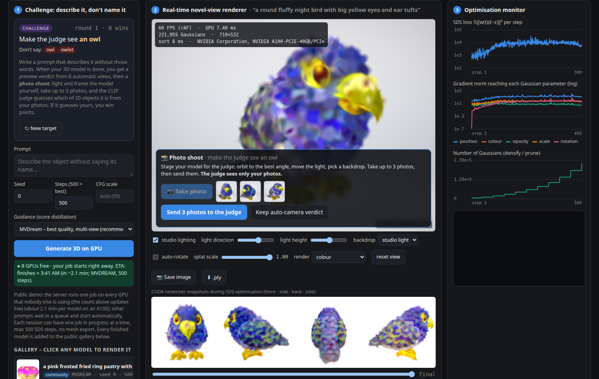
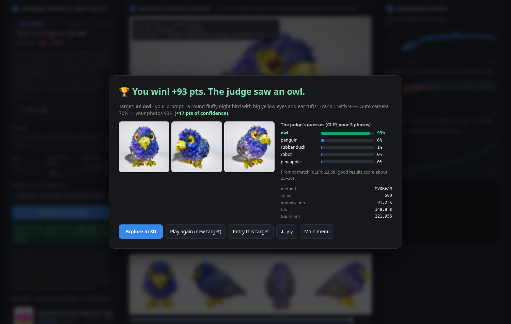
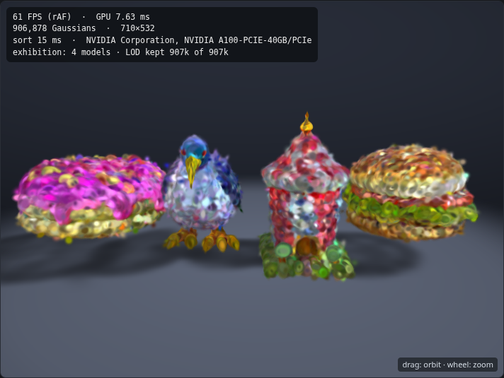

Text → 3D Gaussians optimised by score distillation from a frozen diffusion prior (DreamGaussian; MVDream multi-view guidance by default, 500 steps).
The A4 game loop is unchanged in structure: menu → Challenge (describe a secret object without its taboo words) → GPU job with queue, ETA, Stop → result.
For this Beta, 6 real Challenge rounds were played through the public URL at the same time (one per session, MVDream, 6 free A100s):
all 6 jobs finished, 166–166 s per round from submit to judged model (queue, model load, 500 steps, views, judge);
the 500 optimisation steps took 89–92 s, the same as a single job in A3 (89–94 s), so parallel players do not slow each other down.
These rounds fix the A4 known issue “no real GPU Challenge round recorded yet”. Raw data: evidence/beta_rounds.json.
| target | player prompt (no taboo words) | auto preview (8 views) | raw, white | raw, black | studio dark | studio light |
|---|---|---|---|---|---|---|
| owl | “a round fluffy night bird with big yellow eyes and ear tufts” | 76% | 80% | 90% | 97% | 93% |
| pineapple | “a spiky tropical fruit with a crown of green leaves” | 42% ✗ | 36% ✗ | 48% ✗ | 46% ✗ | 22% ✗ |
| hamburger | “a grilled beef patty sandwich with lettuce, tomato and cheese in a sesame bun” | 100% | 100% | 100% | 100% | 100% |
| lighthouse | “a tall red and white striped coastal tower with a lamp room on top” | 57% | 28% ✗ | 55% | 69% | 79% |
| penguin | “a black and white flightless antarctic bird standing upright” | 66% | 91% | 66% | 70% | 66% |
| donut | “a pink frosted fried ring pastry with rainbow sprinkles” | 99% | 100% | 99% | 94% | 86% |
| wins / mean target probability | 5/6 · 0.73 | 4/6 · 0.72 | 5/6 · 0.76 | 5/6 · 0.80 | 5/6 · 0.74 | |
Target probability (✗ = judge picked another object). Photos taken by a scripted player through the real UI (front, ±35°), scripts/shoot_rounds.py → evidence/beta_shoot.csv.
Studio lighting on the dark stage raised the mean target probability from 0.72 (raw splats on white) to 0.80
and turned a lighthouse from a loss into a win. It is not always better (a penguin, a donut scored highest raw on white), so the look is a real choice for the player.
The rounds themselves were played in the studio-light look: 425 pts · 5/6 wins · streak 4.



| setting (headless Chrome, WebGL2, A100) | Gaussians | canvas | FPS (rAF, capped 60) | GPU ms (splat pass) | sort ms (worker) |
|---|---|---|---|---|---|
| single model, raw splats | 220,296 | 810x607 | 61 | 6.9 | 4 |
| single model, studio lighting + stage | 220,296 | 810x607 | 61 | 6.87 | 4 |
| single model x8 replicas, studio | 1,762,368 | 810x607 | 18 | 51.85 | 30 |
| exhibition 4 models, studio | 1,100,201 | 810x607 | 56 | 14.08 | 18 |
| exhibition 8 models, LOD 1.2M | 1,200,000 | 810x607 | 61 | 11.55 | 18 |
| exhibition 8 models, LOD 2.4M | 2,147,257 | 810x607 | 40 | 20.19 | 34 |
Lighting is computed per Gaussian in the vertex shader, so it costs nothing measurable (6.9 → 6.87 ms); the frame is bound by the number of Gaussians.
Every setting a player can reach stays at ≥ 40 FPS (worst 20.2 ms GPU). The A3 stress case of 8 replicas stacked on one spot
(1,762,368 Gaussians, heavy overdraw) drops to 18 FPS; this is why the exhibition keeps each model's most opaque Gaussians within an LOD budget
(default 1.2 M → 61.0 FPS). scripts/bench_beta.py → evidence/beta_render.csv.
New features: studio lighting from per-Gaussian normals (toggle, light direction and height); four backdrops (studio dark, studio light, plain white, plain black) with ground plane and soft shadow;
photo shoot phase in every Challenge round with a CPU CLIP judge endpoint (/api/judge_photos, about 1 s for 3 photos, never takes a GPU);
points per win and a points total in the HUD; Exhibition menu mode (trophies first, then your models and examples; 2–8 models; LOD budget 0.6/1.2/2.4 M; two rows above 4 models);
camera target support in the viewer; the result card shows the player's photos and the change against the preview.
Stability: leaving a round mid-shoot (menu, Esc, new job) keeps the preview verdict instead of losing the round; the photo judge is loaded at server start; photos are size-checked
and one judgement per visitor runs at a time; the Beta server moved to hermes after homer rebooted.
Known issues: normals from the shortest axis are noisy on fuzzy, blob-like Gaussians, so lighting can look speckled; the shadow uses Gaussian centres only (no self-shadowing);
the judge can be gamed by backdrop choice (studio dark vs. white changes the score), which is part of the game but makes scores depend on the look;
the quick-tunnel URL changes when the tunnel restarts; points and trophies live in sessionStorage (lost with the tab) until the SQLite leaderboard in week 12;
the exhibition downloads every model's full PLY before LOD (about 10–15 MB each).
| Week | Engineering / content | Milestone |
|---|---|---|
| 9 · Oct 26–Nov 1 | Alpha: game loop, CLIP judge, render modes, offline jobs, watchdog | Alpha v0.2 (A4) |
| 10–11 · Nov 2–15 | Beta (this build): lit splats (normals, wrap diffuse, specular, rim), stage + soft shadow, photo shoot inside the Challenge round, CPU photo judge, exhibition with LOD; real MVDream rounds; render benchmark | Beta v0.3 live + tagged (this report) |
| 12 · Nov 16–22 | Persistence (SQLite: rounds, points, leaderboard), moderation of the gallery, stable hosting (named tunnel); photo-judge robustness (prompt ensembles, more targets) | Integration: leaderboard + photo points; classmate play-test |
| 13 · Nov 23–29 (Thanksgiving) | Fix play-test issues; per-pixel shading option; mobile layout of the photo shoot; GPU sort for very large exhibitions | Play-test triage |
| 14 · Nov 30–Dec 6 | Feature freeze: fix top issues only; load test with parallel players; record final video | Release candidate v1.0-rc |
| 15 · Dec 7–13 | BUFFER WEEK: bug fixing, documentation and polish only; no new features | v1.0 + final submission |
green done · purple integration · orange buffer week (no new features).
Run: bash scripts/setup_env.sh, then bash scripts/serve_public.sh (or python server.py); Linux + NVIDIA GPU ≥ 12 GB.